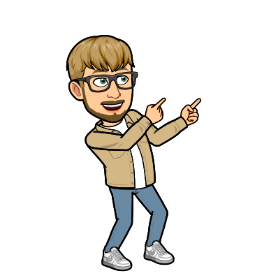

Geboren und aufgewachsen in Uznach, Schweiz, fand ich schnelles Interesse für die Welt der Informatik.
Schon in jungen Jahren faszinierte mich dieses rechteckige Ding namens Computer, im Alter von 18 Jahren
konfigurierte und Baute ich meinen ersten zusammen. Mit den Jahren richtete sich mein Augenmerk immer mehr
in Richtung des Programmierens, so sehr, dass ich nun Ende 2022 eine verkürzte zweit Lehre für 2 Jahre als
Berufsumsteiger Informatiker Fachrichtung Applikationsentwicklung in Zürich startete.
Zurzeit habe ich mich noch nicht wirklich auf ein IT-Gebiet oder Programmiersprache spezialisiert. Die
meiste Erfahrung habe ich aber auf den Gebieten Java und Webseiten Programmierung gesammelt. Bei einem
kleinen Teil meiner Projekten, konnte ich auch schon etwas Wissen in MySQL Datenbanken aufbauen.
Schauen Sie sich doch auf dem Register
meine Projekte
um, dort finden Sie einige aktuelle geschriebene Projekte.
Uznach, 03. September. 2022
Download
